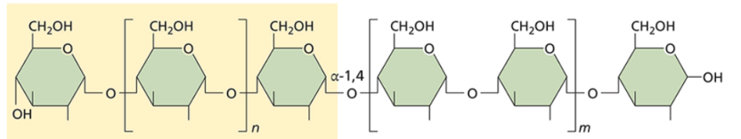
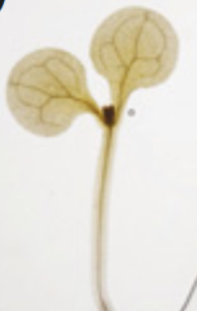
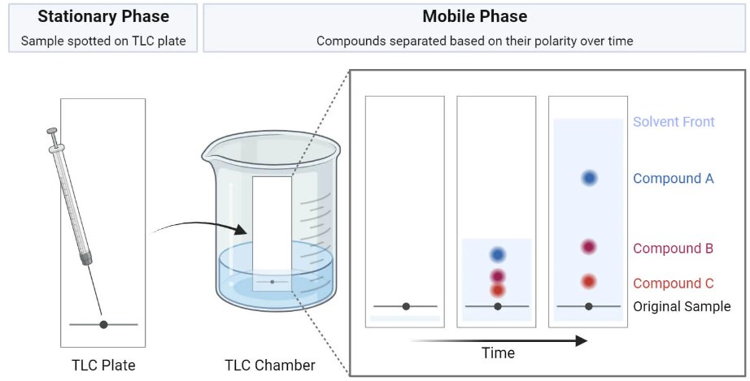

Follow the sessions in order. All exercise questions, figures, answer discussions and the virtual lab are on this page. Download one notebook containing your work from the whole day.
The previously open 14:00–15:45 slot contains the in silico adaptation of the starch-degradation exercise. Breaks fall between sessions; lunch is 12:00–13:00.
Work in groups for the morning and virtual lab; answer the 16:00 assignment individually. Answers from all sessions are saved in one notebook.
Download your notebook before leaving.
09:00–09:45 / Marek
Glycogen lecture
Use the lecture to connect glycogen structure with mobilization and regulation in liver and muscle.
10:00–10:45 / Marek
Starch lecture
Focus on amylose, amylopectin, granule structure and the enzymes of synthesis and degradation.
11:00–12:00 / Marek / Group work
Theoretical exercise: starch and glycogen
Work in groups of 3–4. Attempt each question before opening its answer discussion. The six questions and source figures are adapted from the supplied theoretical-exercise slides and worksheet.
Suggested timing: Q1–2, 10 min; Q3, 10 min; Q4, 20 min; Q5, 10 min; Q6, 10 min. Answer discussions are available for self-checking, so this page is not a secure assessment platform.
1. Identify the glucans
Which structure is amylose and which is amylopectin? Identify the linkage that distinguishes them and locate a reducing end.
Structure A

Structure B
Answer discussion · Q1
A is amylose; B is amylopectin. Both contain α(1→4) chains. B also shows an α(1→6) branch. The free anomeric C1 at the right-hand end is reducing; the outer chain tips are nonreducing ends. Amylose is predominantly linear, although real preparations can have sparse branches.
2. Compare starch and glycogen
Compare branching, physical organization, biological occurrence and accessibility to enzymes. Distinguish amylose from amylopectin when discussing starch.
Answer discussion · Q2
Glycogen generally branches more frequently than amylopectin. Starch contains amylopectin and usually amylose, which is much less branched. Starch forms semi-crystalline granules; glycogen lacks this starch-like crystalline organization and is generally more accessible in the preparations considered here.
Starch is the principal storage glucan in plants. Glycogen occurs in animals, including liver and muscle, and in fungi and many bacteria and archaea. Linkage chemistry alone does not determine digestibility: physical organization and pretreatment also matter.
3. Sort the enzymes
Assign each enzyme to synthesis, breakdown or a role that depends on the enzyme isoform and biological context. Explain any ambiguous classification.
α-Amylase, β-amylase, DPE1 and DPE2. The DPEs transfer glucan segments or glucosyl units rather than simply hydrolysing every bond.
Debranching depends on context
The ISA1/ISA2 complex supports normal amylopectin synthesis by removing unsuitable branches. ISA3 and limit-dextrinase/pullulanase-type activity contribute to leaf starch breakdown. Debranching chemistry therefore participates in both pathways, but the isoforms are not interchangeable.
Clarification of the older key: it grouped ISA1/ISA2 under “both pathways”. Here we distinguish the biosynthetic ISA1/ISA2 complex from catabolic ISA3 and limit-dextrinase. Streb et al., 2012.
4. Complete the pathway maps
Identify the enzyme at each numbered red box in Figures 1 and 2. Select a box to jump to its answer field below the figure.
Produces: Glucose + acceptor glucan extended by one residue
Answer discussion · Q4
S1: AGPase. S2: starch synthases, including GBSS for amylose and SSS for amylopectin chains. S3: SBE. S4: ISA1/ISA2-mediated trimming in amylopectin biosynthesis; other debranching activities can contribute depending on context.
D1: isoamylase / pullulanase-type debranching. D2: α-amylase. D3: β-amylase. D4: DPE1, which can redistribute two maltotriose molecules into maltopentaose and glucose. D5: DPE2, which transfers a glucosyl unit from maltose to an acceptor glucan and releases glucose.
bam1 affects β-amylase. isa1/isa2 affects biosynthetic glucan trimming. The missing historical mutant is sex4: SEX4 is a glucan phosphatase involved in starch degradation. The original map’s placement of isa1/2 beside a generic degradative debranching reaction should not be read as assigning the same physiological role to all isoamylases.
The mutants are a theory question from the earlier laboratory course. No plant-mutant wet lab is part of today’s virtual exercise.
5. Interpret the seedling images
These two Arabidopsis seedlings were collected in the evening. The source exercise identifies one as wild type and the other as a mutant affecting starch biosynthesis.
Left seedling

Right seedling
Which staining method was used?
Which seedling is consistent with the wild type, and which with the mutant?
Suggest a plausible affected enzyme or gene. What can the image alone establish?
Why collect in the evening? How would sampling in the morning affect the comparison?
Answer discussion · Q5
The method is iodine / Lugol staining. In the intended comparison, the strongly stained left seedling is wild type and the pale right seedling is the mutant. A defect in plastidial phosphoglucomutase (pgm) or ADP-glucose production is a plausible explanation for very low starch. The image does not identify a genotype or quantify starch independently of its composition.
Leaf transitory starch normally accumulates during the light period and is mobilized at night. Evening sampling makes a starch-deficient phenotype easier to distinguish from wild type; by morning, wild-type starch is normally much lower.
Clarification: loss of GBSS primarily removes amylose, not all starch. It can change iodine colour while amylopectin remains. A pale image therefore should not be used to equate a GBSS mutant with a starchless mutant. Seung et al., 2020.
6. Prepare to interpret TLC

TLC schematic reproduced from the supplied exercise deck. The accompanying worksheet credits Microbe Notes.
If A, B and C are linear glucans of different lengths after debranching, which is longest and which is shortest under the stated chromatographic conditions?
Which substrates and treatments will you compare in the afternoon? Refer to the 15-condition matrix.
What are glucose, maltose, maltotetraose and maltoheptaose, and why include them as standards?
The sugars are colourless in solution. How can you detect them on the plate?
Answer discussion · Q6
For the simplified comparison of related linear glucans under these conditions, C is longest and A shortest. Migration depends on interactions with both phases; it is not a universal molecular-size rule.
The afternoon compares glycogen, potato starch and amylose-rich starch in the five treatments shown in the matrix. The standards have DP1, DP2, DP4 and DP7. Glucose is a monosaccharide; the others are α(1→4)-linked maltooligosaccharides. Co-migration supports provisional product assignments. Quantification would require calibration and appropriate detection.
Iodine detects suitable longer glucan chains. The manual then uses sulfuric-acid/methanol treatment and heating to visualize carbohydrates more broadly, including small sugars. Heating alone is not the full detection protocol. Short products may be present even when iodine colour is weak.
Use the industry talk to connect substrate preparation, enzyme choice and product composition with a real starch-processing application.
14:00–14:10 / The question
Virtual starch-degradation lab
14:00–15:45 · In silico adaptation of the original laboratory exercise, Section A.
How do branching, physical structure and enzyme specificity determine the products of glucan hydrolysis?
G
Glycogen
Mussel preparation. Highly branched α-glucan with relatively accessible chains.
S
Potato starch
Amylose and amylopectin packed into semi-crystalline storage granules.
A
“Pure amylose” starch
The manual’s transgenic barley preparation. Idealized here as unbranched, but still physically resistant.
Simulated teaching examples. Colours, band positions and band darkness are illustrative, not measurements from the manual or predictions of yield. Interpret controlled comparisons; do not estimate concentrations from this display.
Protocol retained from the manual
Prepare untreated and heat-treated portions of each substrate. Heat treatment: 60°C for 5 min. Each reaction contains 100 µl substrate + 100 µl diluted saliva, isoamylase or Tris, followed by 30 min at 37°C and cooling on ice. “Untreated” refers to pretreatment; all reactions share the same 37°C incubation.
Saliva supplies α-amylase. Isoamylase is the α(1→6) debranching enzyme. There is no β-amylase treatment in this exercise.
TLC: silica; acetone:ethanol:water 7:1:2. The original sequence is iodine-vapour visualization, then sulfuric-acid/methanol treatment and heating for broader carbohydrate detection. Here you compare virtual images of those readouts. A separate iodine-colour panel is an added teaching aid.
The manual calls the heated preparations gelatinized. We use heat-treated: complete gelatinization at 60°C for 5 min cannot be assumed for all three preparations.
105-minute session plan
Time
Activity
14:00–14:10
Introduce structures, enzymes and the question.
14:10–14:30
Predict the five conditions for your assigned substrate; explain the controls.
14:30–14:50
Run virtual samples and inspect iodine signals and bond cleavage.
14:50–14:55
Short break.
14:55–15:20
Interpret TLC using standards and both detection methods.
15:20–15:35
Compare substrates; reconcile observations with predictions.
15:35–15:45
Finish one results table and a short conclusion; download the notebook.
14:10–14:50 / Predict & investigate
Your virtual bench.
0 / 15 samples revealed
Select a numbered sample. Record your prediction before revealing its result. Sample numbers match the manual.
Three substrates × five treatments. “Heated” = 60°C for 5 min before the reaction.
Substrate
Tris Untreated
Tris Heated
Saliva Untreated
Saliva Heated
Isoamylase Heated
Sample 1
Iodine readout
QUALITATIVE SCENARIO
α(1→4) α(1→6) R Reducing end N Nonreducing end
Hexagons are schematic glucose residues, not atomic structures. Bond ports indicate donor C1 and acceptor C4 or C6; the ring oxygen is O. This small linkage sketch does not determine the iodine or TLC pattern. For potato starch, it shows an amylopectin fragment.
Check the comparisons before interpreting the results
Enzyme effect: saliva or isoamylase versus the matching Tris control.
Heat effect: compare untreated and heated Tris controls, then untreated and heated saliva samples.
Substrate effect: compare the same treatment across the three substrates.
Missing comparison: there is no untreated + isoamylase condition. You cannot isolate the effect of heat on isoamylase activity from this matrix.
14:55–15:20 / Analytical evidence
Read the plate, not just the colour.
Match bands to the reference lanes. Compare iodine detection with broader carbohydrate detection on the same virtual plate.
Detection method
S = mixed standards: glucose (DP1), maltose (DP2), maltotetraose (DP4), maltoheptaose (DP7). DP = degree of polymerization. Rf = distance travelled by spot ÷ distance travelled by solvent front. The displayed Rf values are chosen for this illustration.
Accessible text description of the displayed plateInterpretation limits
Co-migration with a standard supports a provisional assignment; it does not uniquely establish identity. Low-mobility material may contain long linear chains, branched dextrins or retained polymer. These cannot be assigned a unique DP from this plate.
The short DP1, DP2, DP4 and DP7 standards are not visibly detected by iodine in this teaching example. Long iodine-binding chains can stain, while smaller products appear after charring. Band intensity is not calibrated for quantity, and absence of a visible band is not proof of absence.
There is no glucose-producing exo-enzyme in this exercise. The illustrative saliva lanes contain small oligosaccharides, not complete conversion to glucose.
15:20–15:45 / Compare & conclude
Make a claim. Show the comparison.
Your submission is this results table plus a short conclusion. Predictions are locked when a result is revealed; use the observation field to revise your explanation.
Notebook · simulated observations, not experimental measurements
Sample / treatment
Prediction
Revealed result
Your interpretation
16:00–17:00 / Marek / Individual work
Exam-style assignment: the β-amylolytic limit
Work individually before opening the answer discussion. Allow about 10 min to read and plan, 35 min to answer the four questions and 15 min to review your reasoning.
Starch granules are gelatinized by heating in water or buffer to disrupt their semi-crystalline structure and make the chains accessible to enzymes. In this question, assume the starch has been adequately gelatinized. This differs from assuming that every preparation in the afternoon lab fully gelatinizes at 60°C.
After treatment with β-amylase, potato starch has a β-amylolytic limit of approximately 46% and maize starch approximately 43%. Here the percentage denotes the fraction of the starch degraded by β-amylase under the stated conditions.
These percentages are given in the source assignment. They are not generated by the virtual lab or particle model.
1. Compare potato and maize amylopectin
Initially disregard amylose. What can the 46% and 43% limits tell you about the structures of potato and maize amylopectin? Explain the mechanism and qualify the inference.
2. Substitute glycogen
If glycogen is used as the substrate, would you expect the percentage to be higher or lower than for these starches? Explain your expectation.
3. Follow amylose
What happens to amylose when β-amylase is added? Describe where the enzyme acts and its main product.
4. Remove the structural barrier
Name an enzyme that could be added before β-amylase to improve conversion of the starch to maltose. Explain what bond it cleaves and why this helps.
The original asks for breakdown “completely to maltose”. Address the intended debranching mechanism, then consider whether that wording guarantees a 100% maltose yield for every chain-length distribution.
Answer discussion · open after completing all four questions
1. Amylopectin structure
β-Amylase removes successive maltose units from nonreducing ends by α(1→4) hydrolysis and is blocked by the branched structure. The lower maize value is consistent with a smaller removable outer-chain fraction and, in the simplified interpretation of the source key, more frequent branching or shorter outer chains. The percentages alone do not uniquely determine branch density or the full chain-length distribution.
2. Glycogen
The intended expectation is a lower limit because glycogen generally has more frequent branches and shorter outer chains. Give this as a structural expectation under comparable conditions, not a numerical prediction from the two starch values.
3. Amylose
Predominantly linear amylose can be degraded much more extensively, releasing mainly maltose from its nonreducing end. Sparse branches in real amylose can limit the reaction. The “β” in β-amylase refers to the initial configuration of the released maltose, not to hydrolysis of β-linked starch.
4. Debranching
Isoamylase or a suitable pullulanase removes α(1→6) junctions, making the remaining linear chains available to β-amylase. This answers the intended question. It does not, by itself, guarantee that every glucose residue ends up in maltose: terminal short fragments and odd chain lengths require attention, as does the particular enzyme preparation.
Mechanistic reference: IUBMB β-amylase nomenclature. The source key has been qualified where it equates the limit directly with branching or assumes complete maltose conversion.
Original Danish suggested answers · Historical wording is preserved in this download; use the clarifications above when discussing it.
Sources and adaptations
The theoretical questions and figures come from the supplied theoretical_exercise_slides_for-class_v1_students.pptx, checked against the answer deck and theoretical_exercise_v2_with-answers-for-absalon.docx. Figures 1 and 2 show the supplied synthesis and degradation sheets with numbered reactions. The old dates, timetable and references to attending a wet lab have been replaced with today’s programme.
The 14:00 lab uses Section A of LabManual_2023-2024_Danish.docx. Only its iodine/TLC scenarios are simulated. The evening assignment is adapted from eksamenslignende opgave uge 49.pdf, its answer PDF and the supplied answer slides. Question content is available inline; original Danish exam PDFs are optional downloads.
Clarifications distinguish ISA1/ISA2 from catabolic debranching isoforms, amylose-free from starchless mutants, qualitative TLC from quantitative analysis, and debranching from a guarantee of complete maltose yield. Source and adaptation notes.